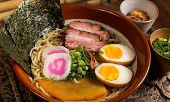

Receita de Lamen
Ingredientes
Lombo Assado:
- 1kg Lombo suíno temperado
- 100g de manteiga
- Raspas de limão
- 1/2 Colher chá de Gengibre Ralado
- 1/4 Colher chá de Cominho em Pó
- 1 Colher chá de Sal
- 1 Colher sopa de Azeite
- 1 Cabeça de Alho
- 1/2 Colher chá de Pimenta do Reino
- 1 Limão fatiado em 4
- Ramos de Alecrim a gosto
- Ramos de Tomilho a gosto
Ovos Cozidos:
- 4 Ovos em temperatura ambiente
Macarrão:
- 250 g de Macarrão para yakisoba ou instantâneo.
Caldo:
- 1 Litro Água
- 2 Cubos de Caldo de Legumes caseiro
- 2 cm de Gengibre
- 1 Cebola cortada em 4 partes
- 50 ml de Saque Mirin ou Vinagre de Vinho Branco
- 1 Colher sopa de Óleo de Gergelim Torrado
- 4 Colheres sopa de Pasta de Misso
- 1 Xícara chá de Molho Shoyu
- 500 ml de Água Quente
Preparo
Lombo Assado:
- Em uma tigela coloque um pouco de manteiga, raspas de limão, gengibre ralado, cominho em pó e misture bem.
- Pegue um lombo e besunte com um pouco de azeite, sal e pimenta do reino, aqueça muito bem uma panela e doure a carne de todos os lados.
- Coloque a carne em uma assadeira forrada com papel alumínio e cubra com a manteiga temperada e coloque junto na forma o limão fatiado, ramos de alecrim, ramos de tomilho e 1 cabeça de alho com o topo cortado.
- Leve para assar em forno preaquecido a 230°C por cerca de 30 minutos, retire do forno e deixe gelar para facilitar o corte.
Ovos Cozidos:
- Em uma panela com água fervente coloque os ovos e cozinhe! Ai você pode deixar a gema mais mole ou mais firme! Para gema mole cozinhar por cerca de 7 minutos já o Ovos mais firmes cozinhar por 13 minutos. Assim que der o tempo, coloque em uma tigela com água e gelo para parar o cozimento e tá pronto.
Macarrão:
- Para o macarrão aqui pode ser aquele instantâneo ou de yakisoba em uma panela com água quente coloque para cozinhar a porção que você for usar, aqui eu to fazendo para 4 pessoas então to fazendo 250g e ai só deixar cozinhar conforme as instruções do fabricante ou ficar macio.
Caldo:
- Em uma panela grande coloque a água, cubos do caldo caseiro, junte o gengibre, cebola, saque, óleo de gergelim, pasta de misso, molho shoyu e cozinhe em fogo baixo com a tampa e deixe cozinhar até começar ferver. Abra a tampa e deixe cozinhar por mais 20 minutos, remova os pedaços (cebola, gengibre) junte a água quente e misture bem.